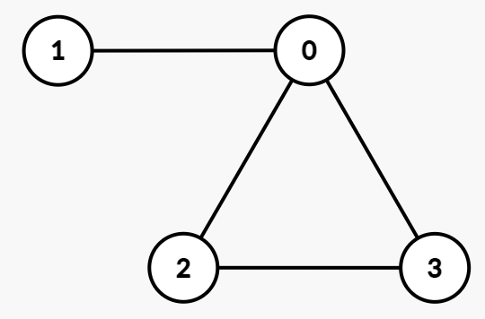

| Category | Difficulty | Likes | Dislikes |
|---|---|---|---|
| Algorithms | Medium | 7 | 3 |
array | binary-search | graph | sorting | prefix-sum
You are given an integer array degrees, where degrees[i] represents the desired degree of the ith vertex.
Your task is to determine if there exists an undirected simple graph with exactly these vertex degrees.
A simple graph has no self-loops or parallel edges between the same pair of vertices.
Return true if such a graph exists, otherwise return false.
Example 1:
Input: degrees = [3,1,2,2]
Output: true
Explanation:

One possible undirected simple graph is:
(0, 1), (0, 2), (0, 3), (2, 3)deg(0) = 3, deg(1) = 1, deg(2) = 2, deg(3) = 2.Example 2:
Input: degrees = [1,3,3,1]
Output: false
Explanation:
degrees[1] = 3 and degrees[2] = 3 means they must be connected to all other vertices.degrees[0] and degrees[3] to be at least 2, but both are equal to 1, which contradicts the requirement.false.
Constraints:
1 <= n == degrees.length <= 1050 <= degrees[i] <= n - 1